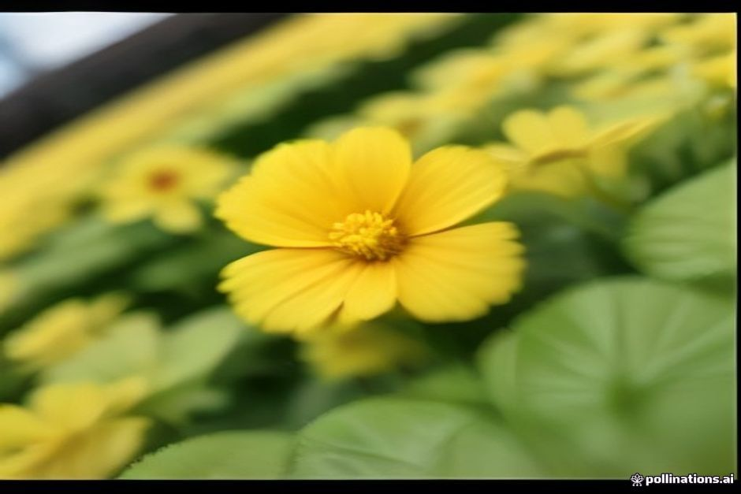

Wer die beste Reisezeit für Madeira sucht und die Blüte erleben möchte, landet fast immer bei März bis Mai. Dieser Text sagt Ihnen, wie das Wetter im März und im April wirklich ist, wann die Insel am schönsten blüht und wo der Frühling Grenzen hat, vor allem beim Baden.
Das Wichtigste in Kürze
- Tagestemperaturen in Funchal: im März und April etwa 19 bis 20 °C, Ende Mai rund 21 bis 22 °C. Nachts selten deutlich unter 14 °C.
- Meer: im März mit etwa 18 °C am kältesten, im April rund 19 °C, Ende Mai näher bei 20 °C.
- Regen: im März sind noch Ausläufer atlantischer Fronten möglich, April und Mai sind spürbar trockener und sonniger.
- Blumenfest (Festa da Flor): 2026 vom 30. April bis 31. Mai in Funchal.
- Unsere Einschätzung: Mai ist der stärkste Monat, April die ruhige Mitte, März passt zu Wanderern und Städtereisenden.
Madeira im März: Wetter und Stimmung
Der März ist der Monat für Reisende, die Ruhe suchen. Die Tageshöchstwerte in Funchal liegen bei etwa 19 bis 20 °C. An der Uferpromenade kann ein sonniger Nachmittag richtig warm wirken, während derselbe Morgen in den Bergen nach einem Pullover verlangt.
Rechnen Sie im März noch mit dem einen oder anderen grauen, verregneten Tag. Die letzten Ausläufer der atlantischen Fronten aus der Regenzeit ziehen gelegentlich durch. Dafür sind die Levadas jetzt besonders grün und wenig überlaufen, direkt nach den Winterregen und lange vor der Sommerhitze.
Wer nach „Madeira März Blumen“ sucht: Die Insel ist auch dann schon bunt, die großen Blütenfeste liegen aber später im Frühjahr.
Madeira im April: Wetter und Blütezeit
Im April liegen die Tageshöchstwerte in Funchal weiterhin bei etwa 19 bis 20 °C. Der Unterschied zum März ist weniger das Thermometer als der Himmel: April und Mai sind deutlich trockener und sonniger als der Winter. Genau dieser Übergang bringt die Hänge zum Blühen.
Madeira liegt im Atlantik vor Nordafrika, deshalb verläuft der Frühling hier nicht wie bei uns. Es gibt kein plötzliches Tauwetter, sondern einen langsamen, stetigen Anstieg von einem ohnehin milden Winter aus. Im Frühling blühen unter anderem Jacaranda und Schmucklilien (Agapanthus). Wer die Blüte sehen will und kein Fest braucht, ist im April gut aufgehoben.
Madeira im Mai: der Monat mit Blumenfest
Gegen Ende Mai erreichen die Tageswerte in Funchal rund 21 bis 22 °C. Das Wetter ist mild und zunehmend sonnig, die Sommermassen sind noch Wochen entfernt. Für viele Reisende ist das die beste Kombination des Jahres.
Die Festa da Flor ist das größte Frühlingsereignis in Funchal. 2026 lief sie vom 30. April bis zum 31. Mai. Fast den ganzen Monat füllt sich die Stadt mit Blumenteppichen, Blumeninstallationen an Wänden und Märkten. Zum Programm 2026 gehörten:
- die Kinder-Mauer der Hoffnung am 2. Mai: Kinder der Insel stecken Blumen in ein Drahtgitter, so entsteht ein Wandbild,
- zwei allegorische Blumenumzüge am 3. und 17. Mai mit Festwagen und Tänzern entlang der Avenida do Mar.
Der größte Teil des Festes, auch beide Umzüge, ist kostenlos von der Straße aus zu sehen. Sie brauchen kein Ticket, aber einen früh gesicherten Platz an der Promenade. Da sich Termine und Programm von Jahr zu Jahr ändern, prüfen Sie die Daten für Ihr Reisejahr rechtzeitig, bevor Sie Flug und Unterkunft buchen.
Wetter im Frühling: Regen und Mikroklima
Im Frühling regnet es weniger als im Winter und mehr als im Sommer. Wichtig für Ihre Planung: Funchal und die Südküste bleiben das ganze Jahr trockener als Santana, São Vicente und Porto Moniz im Norden. Ein bewölkter Morgen in der Stadt bedeutet also nicht, dass die ganze Insel im Regen liegt.
Schauen Sie ein bis zwei Tage vor einem Ausflug auf die Vorhersage, statt sich auf einen Monatsdurchschnitt zu verlassen. Auf Madeira kann aus einem grauen Morgen in Funchal ein heller Nachmittag auf dem Wasser werden, und umgekehrt.
Wassertemperatur: Kann man im Frühling baden?
Nur knapp, und es wird besser, je weiter die Saison fortschreitet. Der Atlantik erwärmt sich langsamer als alles andere auf der Insel. Deshalb hat der März mit etwa 18 °C das kälteste Wasser des Jahres, kälter als mitten im Winter, weil der Ozean noch die Wärme der Vormonate abgibt. Im April sind es rund 19 °C, Ende Mai näher bei 20 °C.
Wer ein erfrischendes Bad gewohnt ist, kann in allen drei Monaten schwimmen. Rechnen Sie aber ehrlich mit „erfrischend“ statt „warm“, und planen Sie eher ein kurzes Bad als einen langen Nachmittag im Wasser. Wenn das Meer der Hauptgrund Ihrer Reise ist, sind Mai und die Sommermonate die bessere Wahl.
Frühling auf dem Wasser: Was eine private Bootstour jetzt bietet
Auch bei kühlerem Wasser lohnt sich der Blick von See auf die Küste, denn die Südküste liegt im Frühling in frischem Grün. Bei Chifbay fährt immer nur eine Gruppe mit, bis zu 5 Gäste, mit zwei lizenzierten Skippern aus Madeira. Treffpunkt ist die Marina do Funchal, Steg C. Die Preise gelten für das ganze Boot, nicht pro Person.
- Tagestour: Abfahrt um 10:00 oder 14:00 Uhr. 2 Std. 30 Min. bis Ribeira Brava für 500 EUR, oder 3 Std. weiter bis Ponta do Sol für 600 EUR. Mit Câmara de Lobos, Cabo Girão, Badestopp und Paddleboards an der Fajã dos Padres.
- Sonnenuntergangsfahrt: Abfahrt 1 Std. 15 Min. vor Sonnenuntergang, das ganze Jahr. 2 Std. bis Cabo Girão für 400 EUR, oder 2 Std. 30 Min. bis Ribeira Brava für 500 EUR. Ohne Badestopp.
Mein Tipp für den März: Wenn Ihnen das Wasser zu kühl ist, wählen Sie die Sonnenuntergangsfahrt, denn sie kommt ohne Badestopp aus. Im Mai passt der Badestopp an der Fajã dos Padres deutlich besser. An Bord sind Essen und Getränke inklusive, dazu ein Insta360-360°-Video, Drohnenaufnahmen (wenn das Wetter es erlaubt) und Fotos mit einer richtigen Kamera. Bis 24 Stunden vor Abfahrt können Sie kostenlos stornieren. Ob Sie Delfine, Wale oder besonderes Licht erleben, lässt sich nicht versprechen. Es ist ein Geschenk, wenn es passiert.
Weitere Ideen finden Sie in unserer Übersicht der besten Bootstouren auf Madeira und bei allen Erlebnissen.

Was Sie für eine Frühlingsreise einpacken sollten
Denken Sie an Schichten statt an Badesachen:
- eine leichte Jacke und einen Pullover für Abende und die Berge,
- bequeme Wanderschuhe für die Levadas,
- einen kleinen Regenschirm oder eine faltbare Regenjacke, vor allem im März,
- Badesachen für ein kurzes Bad.
Weitere Hinweise zu Anreise, Treffpunkt und Ablauf finden Sie in den praktischen Infos.
Welcher Monat ist die beste Reisezeit für Madeira?
Das hängt davon ab, was Ihnen wichtig ist:
- Blüte und Fest: Ende April bis Mai. Der Mai ist der stärkste der drei Monate, weil Wetter und Blumenfest zusammenfallen.
- Ruhe, Wandern, Sightseeing: März. Weniger Betrieb, grüne Levadas, dafür etwas Regenrisiko.
- Ausgewogen: April. Trockener als der März, noch ruhiger als der Mai.
- Baden: eher nicht der Frühling. Das Meer ist dann das kühlste im Jahr.
Wer die Insel in voller Blüte erleben und trotzdem einen schönen Nachmittag auf dem Wasser entlang der Südküste verbringen möchte, bekommt von Ende April bis Mai beides.
Der Sommer bekommt die Hitze. Der Frühling bekommt die Blumen, das Fest und die ruhigen Wanderwege.
Möchten Sie Ihren Frühlingsurlaub mit einer Fahrt entlang der Küste abrunden? Schauen Sie sich unsere private Bootstour auf Madeira an, oder lesen Sie im Journal weiter.